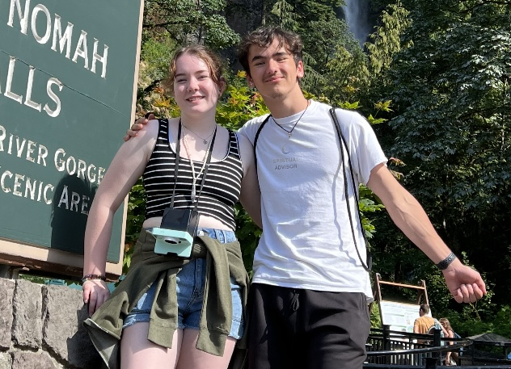

h1nkle#8240
ryanehinkle@lewisu.edu

I'm a freshman here at Lewis majoring in Computer Science. I commute from home where I have a cat and two dogs. Their names are Layla, Molly and
Pumpkin. The picture above is of my girlfriend Bella and I at Multnomah Falls in Oregon, where we vacationed last summer.
In my freetime I enjoy flying my DJI Mavic Air 2 drone, riding my bike, taking care of my fish and watching sports.
My favorite sports to watch are football and hockey. I'm a huge Blackhwaks fan if you couldn't tell by the theme
of this webpage!
I really enjoy travelling. This summer Bella and I made that trip to Oregon completely by car. I drove over 64 hours
round trip. We drove through Wisconsin, Minnesota, South Dakota, Wyoming, Montana, Idaho, and Washington before
arriving to our destination AirBNB in Oregon :)
Below are three of the greatest technological advancements (in my opinion). Click the links to learn more!
Play the Blackhawks goal horn and win song!